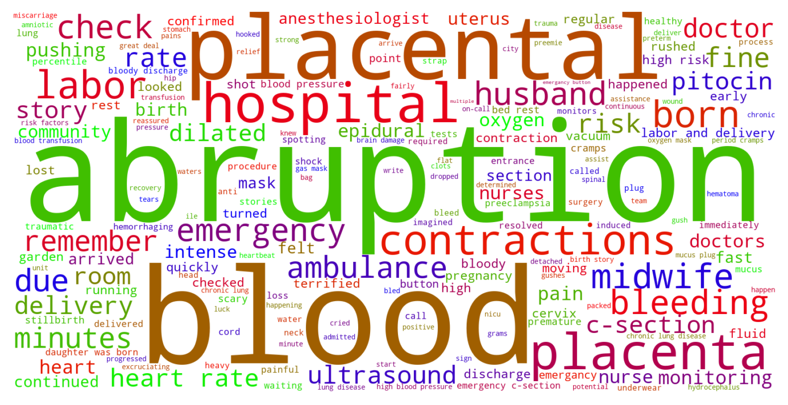

Jump to section:
Samples from Social CorpusHits per UMLS Alias on Social Corpus
Word Cloud Comparison
Embedding Space Comparison
Nearest Neighbors by Semantic Type
Related Analysed Concepts
Samples from Social Corpus
Graduated : placenta separation / rupture , dropped / blocked cord , missing heart beat , emergency C & a terrified dad later we have our first nugget üòÅ With the emergency C I've been doing everything , with family helping during visitation hours so I can crash out - even then finding it pretty tough üòÖ After the last few days I have nothing but awe for single parents doing this alone !
Confidence: 0.872. Reddit link
They can't definitively say it's not a small partial placental abruption .
Confidence: 0.783. Reddit link
They did an ukstrasound and found a massive plancental abrubption .
Confidence: 0.582. Reddit link
- How I did coping ( amazing , she said , which I definitely didn't know ) - How supportive and devoted my husband was during labor , which I mostly knew but everything was such a haze and it was nice to hear it - And we reviewed the end - a possible placental abruption with hemorrhaging for me and a huge heart rate deceleration for baby , and an emergency vacuum assist , and heavy bleeding for hours .
Confidence: 0.717. Reddit link
I had a placental abruption with my daughter at 37 weeks .
Confidence: 0.726. Reddit link
Once at the hospitals , a bunch of tests were run and an ultrasound showed a 10cm clot and that my placenta was detaching rapidly .
Confidence: 0.559. Reddit link
The baby's head came all the way out at that point and we could see that she was cord-wrapped , which was the cause of her distress , so the ambulance man talked me through the procedure as I applied gentle pressure to the top of her head to stop her coming further out and lifted the cord out from around her neck - this was to stop her throttling herself as she was born , and also ripping the placenta out prematurely .
Confidence: 0.613. Reddit link
I had no previous risks for a placenta abruption and my midwife told me that in her 20 years of practice , I was only her third one .
Confidence: 0.792. Reddit link
It wasn't a cord issue , it wasn't a placental abruption - baby had no issue , which is why this has been even harder to accept .
Confidence: 1.000. Reddit link
Possible placental abruption 24 wks 5 days IVF mom Hello everyone .
Confidence: 1.000. Reddit link
Hits per UMLS Alias on Social Corpus
-
placental abruption
152 hits
-
placenta abruptio
29 hits
-
detachment placenta
16 hits
-
abruption placental
12 hits
-
placental separation
7 hits
-
abruptio placenta
6 hits
-
premature placental separation
2 hits
-
prematurely separated placenta
2 hits
-
premature separation placenta
1 hits
-
placental abruptions
1 hits
-
abruptio placentae
0 hits
-
premature detachment placenta
0 hits
-
premature detachment normally implanted placenta
0 hits
-
placentae abruptio
0 hits
-
abruptio placentae syndrome
0 hits
-
accidental antepartum hemorrhage
0 hits
-
ablatio placentae
0 hits
-
accidental antepartum haemorrhage
0 hits
-
couvelaire syndrome
0 hits
-
abruptio placentae premature separation placenta
0 hits
-
premature separation normally implanted placenta
0 hits
-
placental abruption disorder
0 hits
-
accidental antepartum hemorrhage disorder
0 hits
-
couvelaire placenta
0 hits
-
placenta premature separation
0 hits
-
abruptions placental
0 hits
-
accidental hemorrhage
0 hits
-
accidental haemorrhage
0 hits
Word Cloud Comparison
Keywords matching C0000832
Keywords matched against concept. Word size represents frequency.
Keywords co-occurring with C0000832
Co-occurrence is measured at the document-level (i.e. Reddit submissions). Frequencies are normalized to account for keywords common to all CUIs.
Embedding Space Comparison
T-SNE comparison for word embeddings learned from medical domain (EuroPMC) and social media (Reddit) independently.
Pearson correlation for union of closest 1000 neighbors: 0.319
Nearest Neighbors by Semantic Type
Most similar concepts in each of the selected UMLS semantic types. Based on concept embeddings from social corpus.
T046 (Pathologic Function)
-
C0000832
Placental abruption
1.000 Similarity
-
C0240769
Placental bleeding
0.928 Similarity
-
C0032046
Placenta previa
0.916 Similarity
-
C0032044
Placenta accreta
0.908 Similarity
-
C0266763
Complete placenta previa
0.904 Similarity
-
C1306893
Placental issue
0.881 Similarity
-
C0588184
Ragged placenta
0.838 Similarity
-
C0266764
Partial placenta previa
0.835 Similarity
T023 (Body Part, Organ, or Organ Component)
-
C1268155
Placenta part
0.926 Similarity
-
C0042149
Uterus
0.661 Similarity
-
C0226378
Uterine artery
0.655 Similarity
-
C0227486
Left liver
0.612 Similarity
-
C0227828
Cervix wall
0.605 Similarity
-
C0736268
Liver tissues
0.601 Similarity
-
C0007874
Cervix
0.599 Similarity
-
C0227813
Corpus
0.597 Similarity
T018 (Embryonic Structure)
-
C0032043
Placenta
0.924 Similarity
-
C1278988
Entire placenta
0.855 Similarity
-
C0553522
Cord placenta umbilical
0.848 Similarity
-
C0008503
Chorionic
0.722 Similarity
-
C0008508
Chorionic villi
0.715 Similarity
-
C0041632
Umbilical artery
0.631 Similarity
-
C0041633
Umbilical cord
0.615 Similarity
-
C0002630
Amniotic
0.603 Similarity
T047 (Disease or Syndrome)
-
C0242669
Retained placenta
0.873 Similarity
-
C0032051
Placental insufficiency
0.834 Similarity
-
C0266789
Velamentous cord insertion
0.767 Similarity
-
C0231341
Aging premature
0.726 Similarity
-
C0008495
Chorioamnionitis
0.718 Similarity
-
C0341605
Bleeding stoma
0.717 Similarity
-
C0015934
Intrauterine growth restriction
0.716 Similarity
-
C0340464
Extrasystoles
0.699 Similarity
T061 (Therapeutic or Preventive Procedure)
-
C0404381
Delivery placenta
0.870 Similarity
-
C0195755
Manual removal placenta
0.639 Similarity
-
C0269704
Spontaneous vaginal breech birth
0.629 Similarity
-
C0404136
Insertion pack into uterus
0.628 Similarity
-
C0405737
Umbilical cord clamping
0.624 Similarity
-
C0021107
Placement
0.611 Similarity
-
C3665370
Uterine surgery
0.610 Similarity
-
C0269694
Normal birth
0.603 Similarity
T042 (Organ or Tissue Function)
-
C0032058
Placentation
0.860 Similarity
-
C0005778
Clotting
0.611 Similarity
-
C0006660
Mineral
0.604 Similarity
-
C0019116
Stopping bleeding
0.577 Similarity
-
C0037271
Aged skin
0.565 Similarity
-
C4244173
Gestational development process
0.560 Similarity
-
C1325917
Organ induction
0.559 Similarity
-
C4250378
Neural induction
0.548 Similarity
T031 (Body Substance)
-
C3532405
Swab from placenta
0.845 Similarity
-
C0162371
Cord blood
0.645 Similarity
-
C0007806
Spinal fluid
0.604 Similarity
-
C0392908
Secretion vaginal
0.604 Similarity
-
C1549095
Brain cyst fluid
0.568 Similarity
-
C0238626
Amniotic meconium
0.564 Similarity
-
C3496630
Swab from uterus
0.542 Similarity
-
C0002638
Amniotic fluid
0.538 Similarity
T190 (Anatomical Abnormality)
-
C0405024
Accessory placenta
0.811 Similarity
-
C0269852
Previa vasa
0.789 Similarity
-
C0266785
Umbilical cord issue
0.698 Similarity
-
C0266788
Marginal cord insertion
0.670 Similarity
-
C4025734
Anomaly scalp
0.606 Similarity
-
C0269185
Tipped uterus
0.564 Similarity
-
C0302142
Anatomic abnormality
0.561 Similarity
-
C0149952
Ovary torsion
0.540 Similarity
T201 (Clinical Attribute)
-
C1286059
Measure placenta
0.808 Similarity
-
C1286057
Completeness placenta
0.792 Similarity
-
C1868670
Other growth
0.581 Similarity
-
C0442709
End diastolic
0.580 Similarity
-
C1285995
Measure uterine contractions
0.563 Similarity
-
C0012000
Diastolic
0.551 Similarity
-
C1285981
Measure uterus
0.550 Similarity
-
C1517588
Inviable
0.528 Similarity
T060 (Diagnostic Procedure)
-
C2457150
Ultrasound placenta
0.751 Similarity
-
C0008509
Chorionic villus sampling
0.618 Similarity
-
C0033053
Prenatal diagnoses
0.600 Similarity
-
C0203428
Fetal us scan
0.593 Similarity
-
C0412559
Growth us scan
0.586 Similarity
-
C0034606
Scan
0.569 Similarity
-
C2348813
Tus
0.568 Similarity
-
C0200048
Vaginal exam
0.560 Similarity
T101 (Patient or Disabled Group)
-
C0233363
Monoamniotic twins
0.718 Similarity
-
C4727511
Women who have mastectomy
0.523 Similarity
-
C0682161
Dually diagnosed
0.510 Similarity
-
C0871503
Dying patients
0.497 Similarity
-
C0008098
Child hospitalized
0.478 Similarity
-
C1516213
Cancer patient
0.442 Similarity
-
C0021562
Inpatient
0.438 Similarity
-
C1456639
Living with cancer
0.437 Similarity
T019 (Congenital Abnormality)
-
C0266383
Abnormality uterus
0.678 Similarity
-
C1384670
Single umbilical artery
0.674 Similarity
-
C0152240
Septate uterus
0.660 Similarity
-
C0266393
Uterus didelphys
0.658 Similarity
-
C0266387
Bicornuate uterus
0.648 Similarity
-
C0000768
Birth defect
0.629 Similarity
-
C0018798
Heart defect
0.602 Similarity
-
C1527388
Amniotic band
0.598 Similarity
T037 (Injury or Poisoning)
-
C3203359
Ruptures
0.665 Similarity
-
C0269858
Traumatic lesion during delivery
0.603 Similarity
-
C0269271
Bleeding from breast
0.603 Similarity
-
C0554397
Vaginal muscle tear
0.591 Similarity
-
C0405244
Tearing vaginal
0.585 Similarity
-
C0007851
Cervical tear
0.576 Similarity
-
C0005604
Traumatic birth
0.559 Similarity
-
C1959898
Traumatic injury during pregnancy
0.541 Similarity
T059 (Laboratory Procedure)
-
C0005729
Bleeding time
0.651 Similarity
-
C0368930
Clotting time
0.626 Similarity
-
C0026040
Sectionings thin
0.574 Similarity
-
C0200896
Cytogenetic studies
0.535 Similarity
-
C1295143
Fetal fibronectin test
0.528 Similarity
-
C0023901
Liver tests
0.526 Similarity
-
C0032181
Platelet count
0.509 Similarity
-
C0018941
Blood test
0.496 Similarity
T032 (Organism Attribute)
-
C0017504
Gestational age
0.632 Similarity
-
C1954788
Gestational age weeks
0.584 Similarity
-
C0026578
Mosaicism
0.556 Similarity
-
C0805393
Breathing spontaneous
0.540 Similarity
-
C0751992
Fetal weight
0.499 Similarity
-
C0005612
Weight baby
0.499 Similarity
-
C0518035
Children growth
0.495 Similarity
-
C4704805
Trajectory weight
0.467 Similarity
T184 (Sign or Symptom)
-
C0565619
Fetal distress labor
0.631 Similarity
-
C0231243
Complications early
0.615 Similarity
-
C0567085
Uterine pain
0.614 Similarity
-
C0237326
Dyschezia
0.570 Similarity
-
C0423636
Heart pain
0.565 Similarity
-
C0332544
Abnormal weight gain
0.560 Similarity
-
C0522067
Liver pain
0.553 Similarity
-
C0558489
Renal pain
0.552 Similarity
T039 (Physiologic Function)
-
C0743925
Fetal growth
0.608 Similarity
-
C2256369
Heart process
0.495 Similarity
-
C0599423
Joint stress
0.494 Similarity
-
C0015928
Fetal development
0.471 Similarity
-
C3824789
Fetus development
0.468 Similarity
-
C0232338
Blood flow
0.463 Similarity
-
C0162537
Impedance
0.444 Similarity
-
C0149784
Reaction stress
0.428 Similarity
T034 (Laboratory or Test Result)
-
C2266672
Clotting time finding
0.599 Similarity
-
C5201036
Low platelets
0.531 Similarity
-
C0588465
Sperm forward progression
0.508 Similarity
-
C1299966
Ultrasound finding
0.481 Similarity
-
C0427777
Pregnancy results tests
0.475 Similarity
-
C0428409
Progesterone levels
0.470 Similarity
-
C3532201
Chromosome microdeletion
0.468 Similarity
-
C0019029
Hemoglobin levels
0.464 Similarity
T100 (Age Group)
-
C3494262
Extremely preterm infant
0.593 Similarity
-
C4048294
Preterm baby
0.569 Similarity
-
C4551581
Full term baby
0.550 Similarity
-
C0021289
Newborn
0.460 Similarity
-
C3825962
Middle aged women
0.366 Similarity
-
C0870221
Boy
0.363 Similarity
-
C0682054
Mature adult
0.362 Similarity
-
C0021270
Baby
0.360 Similarity
T049 (Cell or Molecular Dysfunction)
-
C4725191
Stop lost
0.585 Similarity
-
C0008625
Chromosomal abnormality
0.561 Similarity
-
C0008628
Del
0.510 Similarity
-
C0008631
Markers chromosome
0.502 Similarity
-
C0002938
Aneuploidy
0.501 Similarity
-
C0040715
Translocation
0.489 Similarity
-
C0544885
Stop gain
0.485 Similarity
-
C0041107
Trisomy
0.484 Similarity
T005 (Virus)
-
C3743464
Mycobacteriophage whirlwind
0.581 Similarity
-
C3768023
Mycobacteriophage conspiracy
0.475 Similarity
-
C4415400
Phage wrath
0.468 Similarity
-
C1220459
Hart park group
0.448 Similarity
-
C3949524
Mischivirus
0.434 Similarity
-
C5058350
Fairfax lookout virus
0.427 Similarity
-
C0086776
Parvovirus
0.410 Similarity
-
C0599652
Leaky virus
0.407 Similarity
T195 (Antibiotic)
-
C0723285
Septa
0.579 Similarity
-
C0003232
Antibiotics
0.410 Similarity
-
C0013090
Doxycycline
0.352 Similarity
-
C0279516
Antibacterial
0.347 Similarity
-
C0718575
Antibiotics ear
0.335 Similarity
-
C0718950
Biomox
0.331 Similarity
-
C0310367
Today
0.314 Similarity
-
C0030842
Penicillin
0.304 Similarity
T048 (Mental or Behavioral Dysfunction)
-
C0038436
Ptsd
0.575 Similarity
-
C0522187
Fear childbirth
0.567 Similarity
-
C0563172
Dangerous plans
0.553 Similarity
-
C0234985
Cognitive decline
0.551 Similarity
-
C0036857
Severe mental handicap
0.546 Similarity
-
C0038441
Stress disorder
0.545 Similarity
-
C0233469
Emotional blunting
0.532 Similarity
-
C0338927
Hospitalism
0.531 Similarity
T079 (Temporal Concept)
-
C0439671
Gestational
0.573 Similarity
-
C0032979
First trimester
0.562 Similarity
-
C2964377
Preterm time
0.562 Similarity
-
C0032790
After surgery
0.562 Similarity
-
C0332262
Noted shortly before death
0.558 Similarity
-
C0178795
Perinatal
0.544 Similarity
-
C0814007
Pregnancy stage
0.541 Similarity
-
C0332282
Subsequent
0.535 Similarity
T074 (Medical Device)
-
C0179931
Aorta clamped
0.566 Similarity
-
C0180647
Internal fetal heart rate monitoring
0.543 Similarity
-
C3878737
Uternine contraction monitor internal
0.539 Similarity
-
C0454152
Blocking kidney
0.512 Similarity
-
C3872996
Fetal doppler system
0.509 Similarity
-
C3881736
Suture holding ring
0.501 Similarity
-
C0016533
Forceps
0.483 Similarity
-
C0030163
Pacemaker
0.475 Similarity
T067 (Phenomenon or Process)
-
C2348438
Encapsulation
0.562 Similarity
-
C0868945
Deterioration
0.527 Similarity
-
C0023983
Long term effects
0.491 Similarity
-
C0337240
Fall while being carried
0.491 Similarity
-
C2986841
Binding potential
0.484 Similarity
-
C0677038
Increase pressure
0.466 Similarity
-
C0034897
Recurring
0.441 Similarity
-
C0870455
Early childhood development
0.431 Similarity
T200 (Clinical Drug)
-
C3216620
Progesterone vaginal product
0.558 Similarity
-
C5222490
Progesterone injection
0.488 Similarity
-
C1247687
Progesterone suppositories vaginal
0.488 Similarity
-
C4048176
Oxytocin injection
0.486 Similarity
-
C0307304
Pitocin injection
0.472 Similarity
-
C3218395
Papain pill
0.463 Similarity
-
C1163679
Injections sterile water
0.460 Similarity
-
C1247002
Misoprostol oral tablet
0.442 Similarity
T041 (Mental Process)
-
C0541879
Detachment
0.554 Similarity
-
C0001762
After image finding
0.501 Similarity
-
C0028758
Bonding
0.495 Similarity
-
C0015726
Scared
0.483 Similarity
-
C0677838
Grief loss
0.478 Similarity
-
C0564404
Stressed out
0.474 Similarity
-
C0025265
Short term memory
0.474 Similarity
-
C0233792
Recent memory
0.469 Similarity
T054 (Social Behavior)
-
C0679426
Incompatibility
0.513 Similarity
-
C0282657
Infibulations
0.461 Similarity
-
C0422386
Patient suing doctor finding
0.454 Similarity
-
C0815201
Couple relations
0.441 Similarity
-
C0021797
Relations with other people
0.437 Similarity
-
C0237868
Separations
0.432 Similarity
-
C0680208
Unconnected
0.431 Similarity
-
C0030209
Bonds pair
0.431 Similarity
T044 (Molecular Function)
-
C0887940
Gene arrangements
0.468 Similarity
-
C1150342
Dopachrome rearranging enzyme
0.429 Similarity
-
C1721104
Breaks dna
0.424 Similarity
-
C1152025
Docs
0.424 Similarity
-
C1749457
Ligands activity
0.409 Similarity
-
C0369768
Oxygen saturation
0.400 Similarity
-
C1149397
Heartless ligand
0.395 Similarity
-
C1752422
Wing hair outgrowth
0.381 Similarity
T007 (Bacterium)
-
C0018154
Gram positive bacteria
0.438 Similarity
-
C0995648
Genus quinella
0.412 Similarity
-
C0022828
L forms
0.410 Similarity
-
C0995705
Frankia
0.369 Similarity
-
C3801085
Enorma
0.368 Similarity
-
C3137302
Brownia
0.364 Similarity
-
C1015849
Wigglesworthia
0.343 Similarity
-
C0579233
Group b strep
0.338 Similarity